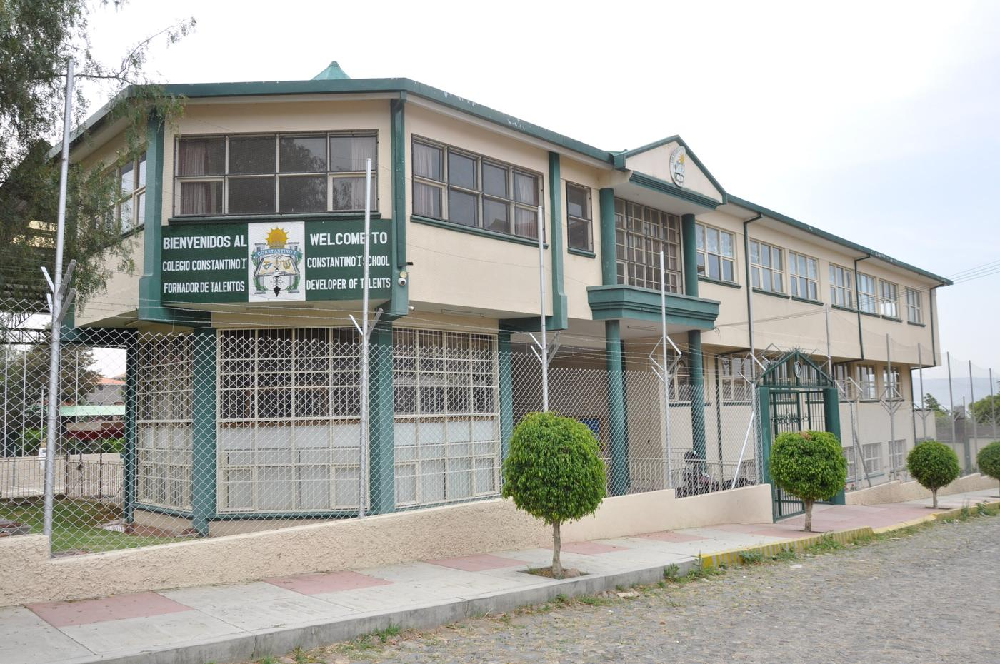
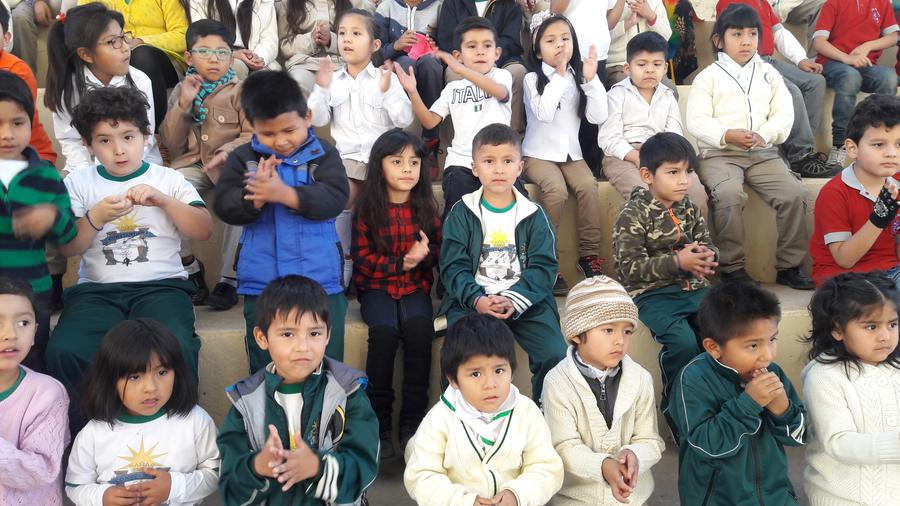
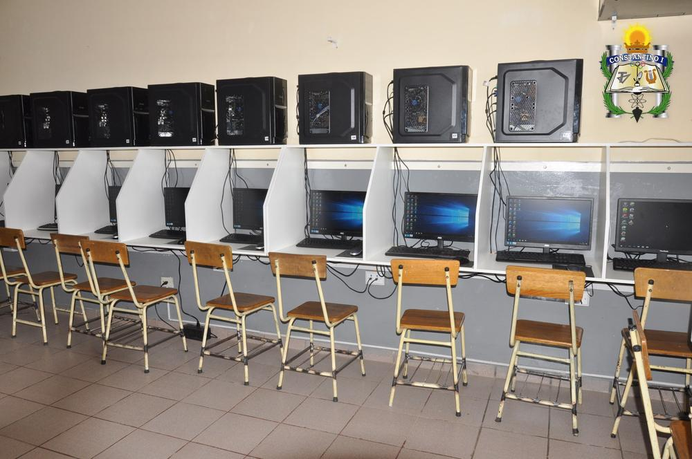

Formamos bachilleres bilingües con talento y valores.
Unidad Educativa Constantino I: formación científica, inglés como segunda lengua, hábito por la lectura y desarrollo de los talentos de cada estudiante, desde Inicial hasta el último año de Secundaria.


Nuestra comunidad, en imágenes
Hacia dónde vamos y qué nos mueve
Consolidar nuestro liderazgo en gestión educativa
Ser un colegio de alta calidad, reconocido localmente por su gestión eficiente y por un rendimiento estudiantil por encima del promedio nacional, y liderar a instituciones similares con procesos de gestión innovadores.
- Egresados que dominan el español y el inglés
- Sólidos valores éticos y formación tecnológica con visión empresarial
- Preparados para el mundo laboral y la educación superior
- Personal competente y motivado, en un clima institucional positivo

Garantizamos un servicio educativo de alta calidad
En todos los niveles y modalidades del sistema educativo, con una educación integral que construye la identidad y la autoestima de los estudiantes para que se integren a la sociedad.
- Formar líderes con hábito de aprendizaje permanente
- Pensamiento crítico y analítico
- Capacidades para el cambio científico y tecnológico y un mundo globalizado
- Gestión responsable de recursos, personal, infraestructura y tecnología educativa
Bachilleres bilingües con elevado conocimiento científico
La Unidad Educativa Constantino I busca formar bachilleres bilingües con elevado conocimiento científico y cultivar el talento innato de cada uno durante su formación, además de lograr solidaridad con ética y moral, como factor de cambio en la sociedad.
Himno al Colegio Constantino I
Constantino “I” tu fuiste
Digno ejemplo de estudio y virtud
Y dejaste una senda trazada
Como herencia de verdad y luz.
Formador de Talentos te llaman
Cuna de nueva generación, a tu
Sombra hoy sembramos semillas
Las que mañana florecerán.
En tu casa el sol resplandece
Con vibrante fulgor del saber
Donde ciencia y conciencia se plasman
Cual cimientos de una nueva nación.
Cual bruñido bronce nuestras mentes
se abrillantan con luz del saber
Ceñirán laureles nuestras frentes
Anunciando un nuevo amanecer.
Toca para escuchar el himno
Lo que sostiene la formación de cada estudiante
Hábito por la lectura
Lectura y escritura como eje: más de 300 obras escritas por estudiantes, desde Inicial hasta Secundaria. «Hagamos de Bolivia un país de lectores».
Materias exactas
Razonamiento concreto, hipotético y abstracto, con preparación para olimpiadas nacionales de ciencias y matemática.
Inglés
Segunda lengua: quienes cursan seis años del colegio deben comprender, hablar, leer y escribir inglés. Hay libros de cuentos en inglés escritos por estudiantes.
Desarrollo de talentos
Ciencias sociales, música, danza, teatro, dibujo, artes visuales, deportes, ajedrez y computación, para formar futuros líderes con ética.
Valores
Responsabilidad, respeto, honestidad, humildad y gratitud, con comunicación constante con los padres: los valores nacen en casa y se refuerzan en el colegio.
Requisitos
Lo que necesitas presentar para reservar un cupo e inscribir a tu hijo/a.
Reserva de cupo
- Certificado de nacimiento original y 2 copias.
- Fotocopia carnet de identidad del estudiante anverso y reverso (A/R).
- Fotocopias de carnet de identidad A/R de ambos padres o tutores.
- Croquis de la vivienda.
- Teléfonos fijos y celulares del papá y mamá.
Inscripción
- Certificado de nacimiento original y 2 copias.
- Fotocopia carnet de identidad del estudiante anverso y reverso (A/R).
- Libreta original + fotocopia A/R (si reprobó libreta original de las 2 gestiones anteriores).
- RUDE fotocopia u original 2 copias (actualizado).
- Fotocopias de carnet de identidad A/R de ambos padres o tutores.
- Croquis de la vivienda.
- Certificado de solvencia indicando que se canceló todas las mensualidades, en la anterior institución.
- Teléfonos fijos y celulares del papá y mamá.
- Carnet de vacuna para Inicial, 1° y 2° primaria.
Servicio de bus escolar, de puerta a puerta
Servicio privado. Los choferes fueron rigurosamente seleccionados y llevan más de 20 años trabajando con la institución.
Videos
Testimonios, actividades y momentos del colegio. Toca un video para verlo aquí mismo.
Noticias y avisos del colegio
Cargando comunicados…
Síguenos en Facebook, Instagram y TikTok
Las últimas publicaciones de Facebook aparecen aquí solas. Instagram y TikTok abren el perfil del colegio.
Accesos directos
Cada botón va directo al servicio puntual, sin pasar por un portal intermedio.
Hablemos sobre la inscripción de tu hijo/a
Agenda tu visita y conoce Constantino I
Recorre el colegio, conoce a nuestros docentes y resuelve todas tus dudas.